Mahasiswa memahami serta mampu membuat program dalam bahasa Java menggunakan instruksi perulangan.
Alat dan Bahan
PC atau Laptop
JDK
NetBeans IDE
Uraian Teori
Loop adalah suatu blok atau kelompok instruksi yang dilaksanakan secara berulang-ulang. Perulangan yang disebut juga repetition akan membuat efisiensi proses dibandingkan jika dioperasikan secara manual.
Perulangan yang dijelaskan pada jobsheet ini adalah:
Perulangan dengan for
Perulangan dengan while
Perulangan dengan do-while
for
for adalah kode yang digunakan untuk menjalankan serangkaian kode secara berulang-ulang. Pada kode for ini terdapat beberapa komponen yang dicantumkan, antara lain: (1) inisialisasi, (2) kondisi, (3) perubahan nilai, (4) statement yang diulang. Berikut ini
format sintaks untuk kode for.
Berikut ini adalah contoh skrip untuk mencetak tulisan “Hello dasar pemrograman” sebanyak 10 kali.
for (int a = 0; a < 10; a++) {
System.out.println(“Hello dasar pemrograman”);
}
while
Kode while merupakan kode alternatif untuk melakukan perulangan selain for. Cara
kerjanya sama, namun sintaks (aturan penulisan) yang berbeda. Berikut sintaks while
while(kondisi) {
statement;
perubahan nilai;
}
Berikut ini adalah contoh skrip untuk mencetak tulisan “Hello dasar pemrograman” sebanyak 10 kali.
int a = 0;
while (a < 10) {
System.out.println(“Hello dasar pemrograman”);
}
do-while
Kode do-while merupakan kode while-do dengan sintaks yang berbeda. Cara kerja do-while relatif sama dengan while. Berikut sintaks untuk do-while.
do {
statement;
perubahan_nilai;
} while (kondisi);
Berikut ini adalah contoh skrip untuk mencetak tulisan “Hello dasar pemrograman” sebanyak 10 kali.
int a = 0;
do {
System.out.println(“Hello”);
a++;
} while (a < 10);
Ketiga jenis loop tersebut sama-sama memiliki kondisi yang merupakan batasan suatu perulangan dilakukan. Cara kerja loop menggunakan for dan while dijelaskan pada Gambar 1. Batasan yang menjadi kondisi suatu perulangan didefinisikan dulu di awal, kemudian dilanjutkan dengan statement yang harus di-looping. Berbeda dengan for dan while, Gambar 2 menjelaskan tentang alur perulangan menggunakan do-while. Setelah inisialisasi dilakukan, akan di proses dulu statement yang harus dijalankan, baru kemudian dilakukan pembatasan looping dalam penulisan kondisi.
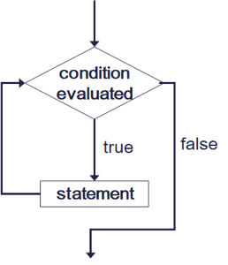
Gambar 1 Flowchart perulangan for dan while
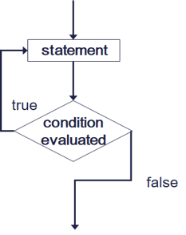
Gambar 2 Flowchart perulangan do-while
break dan continue
Break dan continue tergolong ke dalam keyword di bahasa pemrograman java, yang keduanya digunakan pada suatu kondisi tertentu , pada perulangan seperti while ,do while dan for. Jika fungsi break digunakan untuk menghentikan suatu pernyataan (statement), dan jika fungsi continue digunakan untuk mengabaikan ,lalu melanjutkan suatu pernyataan pada perulangan. Keyword break dan continue juga biasa digunakan, bersamaan dengan Control Flow seperti if else, dan switch case di dalam program java
Langkah Praktikum
Tulis ulang program untuk melakukan perulangan sebagai berikut :
Perulangan dengan for
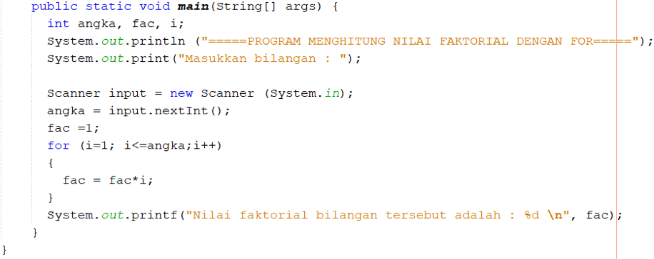
Perulangan dengan while
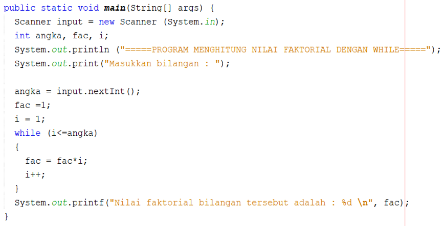
Perulangan dengan do-while
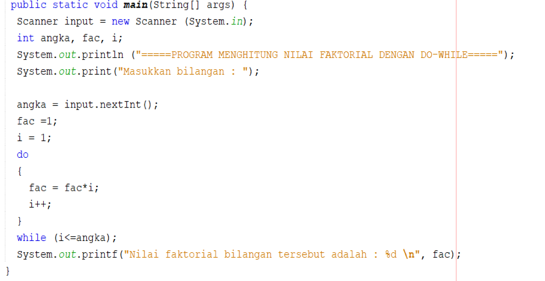
Cocokkan hasil running program yang sudah Anda buat apakah sudah sesuai dengan tampilan berikut ini?
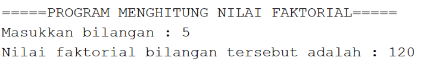
Salinlah program perulangan dengan menggunakan break berikut :
Perulangan dengan for
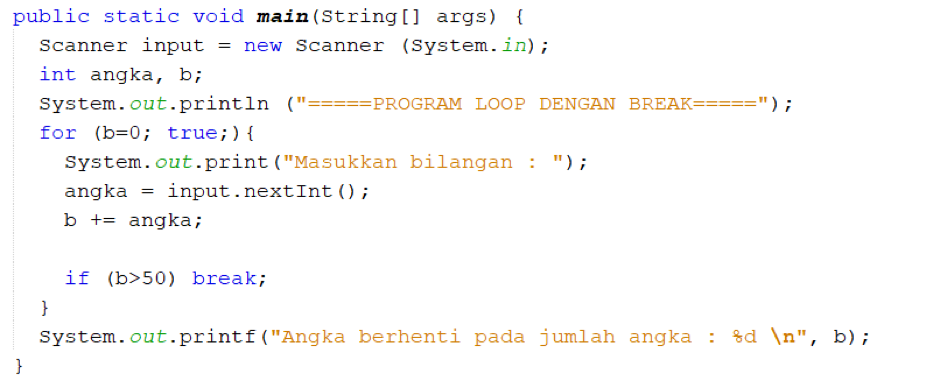
Perulangan dengan while
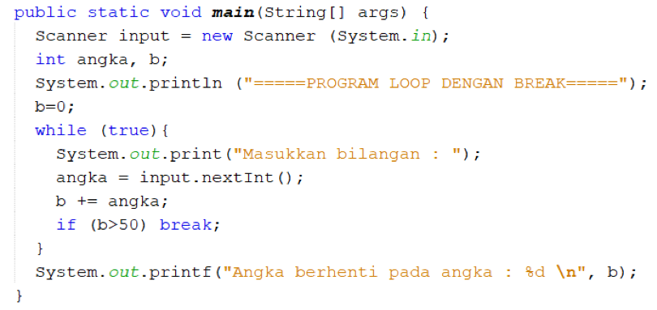
Perulangan dengan do-while
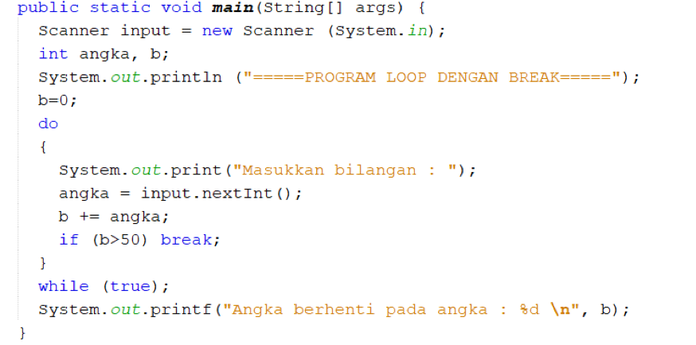
Cocokkan hasil running program looping menggunakan break yang sudah Anda buat apakah sudah sesuai dengan tampilan berikut ini?
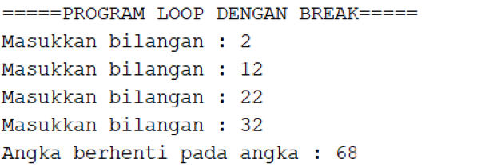
Salinlah program perulangan dengan menggunakan continue berikut :
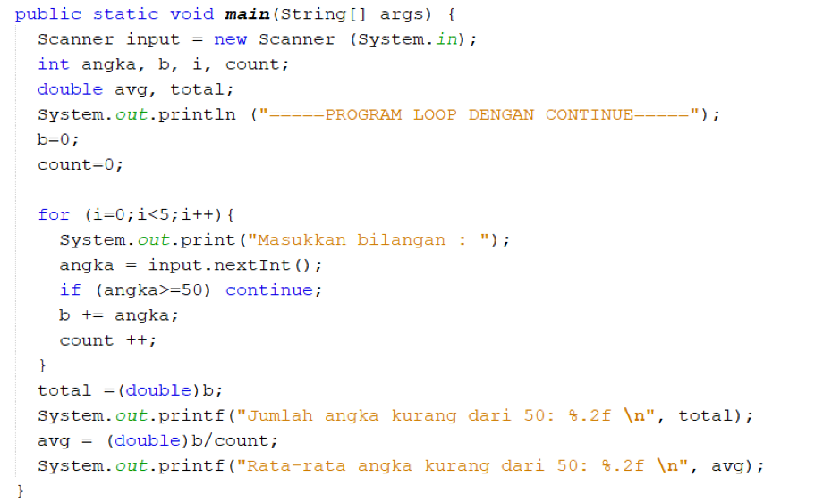
Cocokkan hasil running program looping menggunakan continue yang sudah Anda buat apakah sudah sesuai dengan tampilan berikut ini?
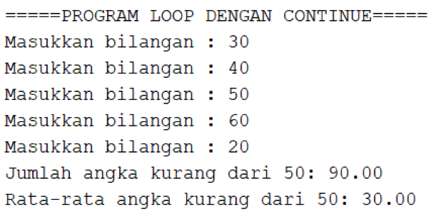
Pertanyaan
Misalkan, Anda diminta membuat sebuah program Java yang meminta masukan sebuah bilangan bulat n. Kemudian, program menampilkan karakter '*' di layar sebanyak n kali. Manakah di antara kedua potongan program di bawah ini yang lebih baik dan aman ? mengapa ?
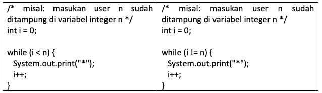
Apakah output dari ketiga potongan program di bawah ini:
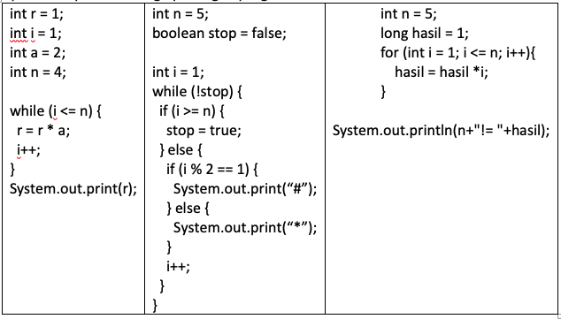
Salinlah program perulangan berikut, dan cocokkan hasil running program apakah sesuai dengan hasil di bawah ini
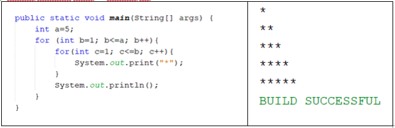
Kembangkan program tersebut sehingga mampu untuk menampilkan output sebagai berikut
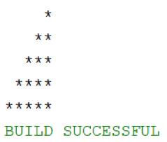
Tugas
(SumAvgGenap) Buatlah program dengan menggunakan bahasa Java yang meminta masukan user sebuah bilangan bulat N (N > 0). Program kemudian menampilkan penjumlahan N bilangan genap positif pertama (bilangan genap ≥ 0).
Contoh:
Jika user memasukkan N = 10, program akan menghitung banyaknya jumlah bilangan positive di dalam range bilangan 1-10 kemudian menampilkan penjumlahan bilangan positive bilangan bilangan diantara 1-10 yaitu :
0 + 2 + 4 + 6 + 10 = 30.
Setelah itu program akan menampilkan rata-rata dari bilangan positive yang telah dijumlahkan tadi.
Contoh output program
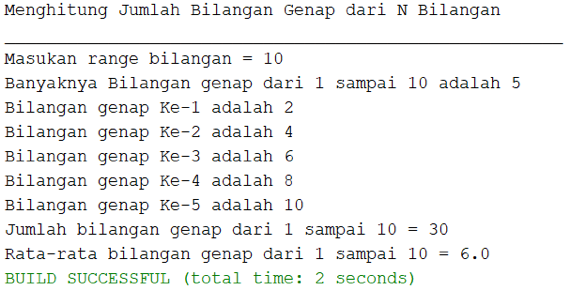
Silakan Anda rancang sendiri untuk tampilan programnya
(SumKGanjil) Buatlah program dengan menggunakan bahasa Java yang meminta masukan user sebuah bilangan bulat N (N > 0). Program kemudian menampilkan penjumlahan N bilangan ganjil positif pertama (bilangan genap ≥ 0).
Contoh:
Jika user memasukkan N = 5, program akan menghitung banyaknya jumlah bilangan positive di dalam range bilangan 1-5 kemudian menampilkan penjumlahan kuadrat bilangan ganjil diantara 1-5 yaitu :
12 + 32 + 52 = 35.
Setelah itu program akan menampilkan rata-rata dari jumlah kuadrat bilangan negatif tersebut.
Contoh output program
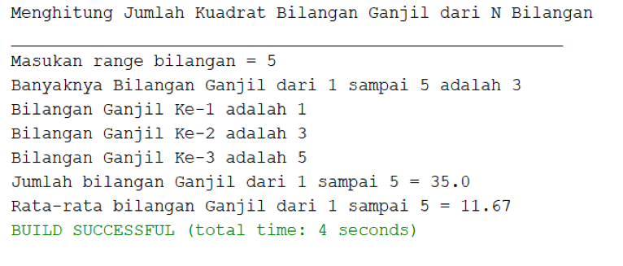
(Fibonacci) Buatlah sebuah program yang menampilkan deret bilangan sebagai berikut
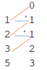
Dimana bilangan yang terletak di sebelah kiri adalah hasil penambahan dari bilangan di atasnya sebagai contoh